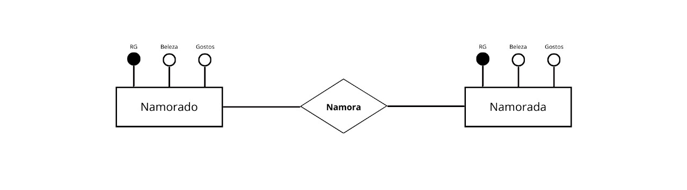

Principais etapas para
modelagem de dados
modelagem de dados
O que é o processo de modelagem de dados?
Você já deve saber a importância da modelagem de dados, mas você sabe
o como esse processo é criado, seus símbolos ou quais são os passos necessários?
O processo de modelagem de dados consiste principalmente no cumprimento de 8 passos, sendo eles:
- Identificação das entidades.
- Identificação das principais propriedades de cada entidade.
- Identificar relacionamentos entre entidades.
- Mapear atributos para entidades completamente.
- Normalização, redução de redundâncias e melhora de desempenho.
- Finalização e validação do modelo de dados.
1. Entendimento do problema e levantamento dos requisitos.
O processo de modelagem de dados se inicia com a identificação do problema situacional, esse processo é responsável por identificar as informações, itens, eventos ou conceitos que usaremos no sistema, nessa fase devemos nos perguntar o que será necessário. Por exemplo:
Quais são as informações importantes?
O que queremos resolver?
De onde vem? Para onde vai?
2. Criacão do Modelo Entidade Relacionamento (MER).
Neste passo deve se identificar as entidades (caracteristicas importantes do nosso sistema),
atributos (caracteristicas das entidades) e como se relacionam entre si. Um exemplo
disso seria a entidade Namorado e Namorada, o relacionamento entre elas poderia ser Namorar,
alem disso essas entidades podem ter atributos que diferenciam um do outro, como:
- RG
- Beleza
- Gostos
3. Criacão de um Diagrama Entidade Relacionamento (DER).
Com entidades, Atributos e Relacionamentos esclarecidos,
devemos criar seu diagrama visual para descrever de forma simplificada o modelo.
Exemplo:

4. Definição das cardinalidade de relacionamento.
Neste passo analisamos de que formas as relações são feitas, identificando quantidades por exemplo: Namorado pode Namorar mais de 1ª Namorada? (se sim quantas). Descrevemos essas relações por meio das cardinalidades.
5. Definição de Um modelo Lógico.
Com MER e DER definidos, devemos "traduzir" as entidades, atributos e relacionamentos
em tabelas, com diversas linhas e colunas.
Cada entidade origina uma tabela, cada coluna dessa tabela são os atributos,
cada linha será uma ocorrência da entidade da tabela e os relacionamentos estarão
em como cada entidade se relaciona.
6. Normalização das Tabelas.
Neste passo analizamos as estrutura das tabelas para ter certeza que suas caracteristicas atendem os pré-requisitos, para garantir que estão bem estruturadas. São aplicadas uma série de regras para assegurar a qualidade da tabela em suas formas.
7. Criacão de um dicionário de dados.
O dicionário de dados é um documento, onde registramos toda a lógica utilizada e pensada
na criação de todas as tabelas, entidades, relacionamentos, atributos, restrições.
Uma forma de documentar o projeto para facilitar futuras manutenções nesse banco de dados
e relembrar caracteristicas importantes, como um manual de instruções para esse banco de
dados.
8. Implementação do modelo físico e realização de testes.
Com o modelo de banco de dados definido, a estrutura da tabela e suas colunas, transferimos
tudo para um Sistema de Banco de dados Relacional (como SQL server, MySQL, PostgreSQL ou Oracle),
utilizando a linguagem SQL.
Após criarmos essas tabelas nos em algum dos Sistemas de Banco de Dados, executamos uma série de
testes, repetindo algumas vezes esse ciclo, fazendo novamente cada uma das etapas assegurando
que toda a modelagem foi feita adequadamente.